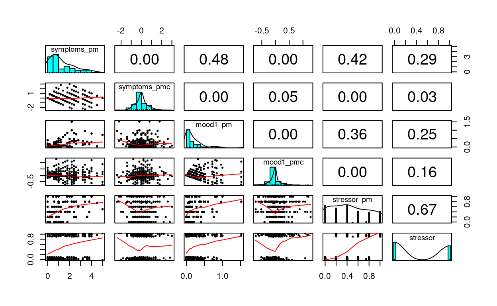
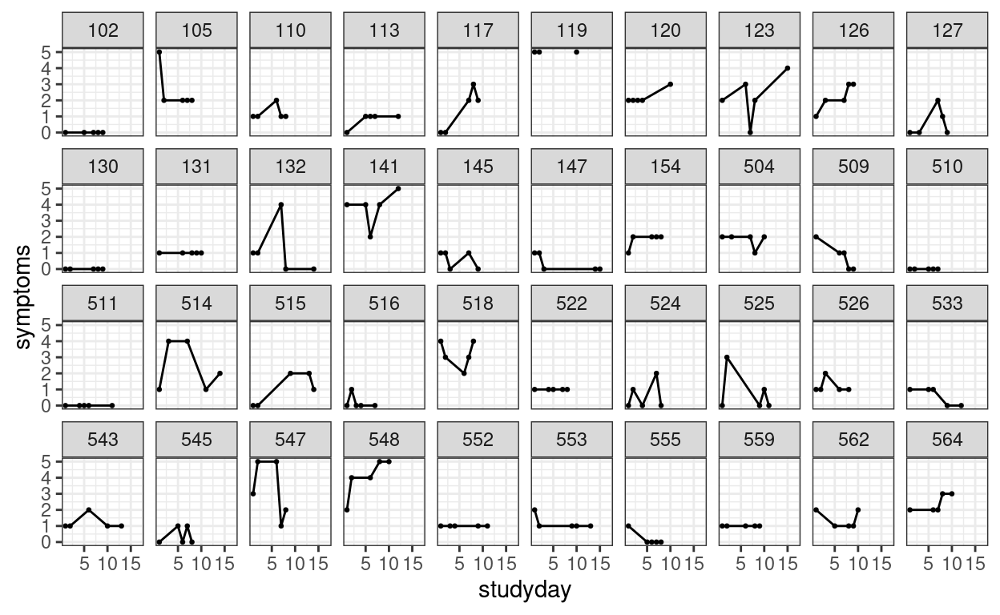
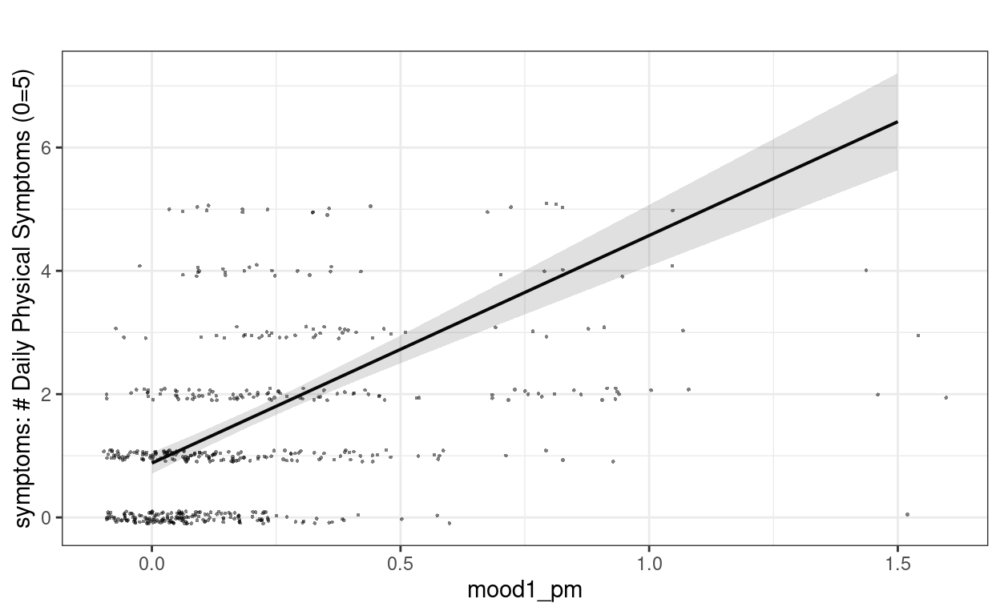
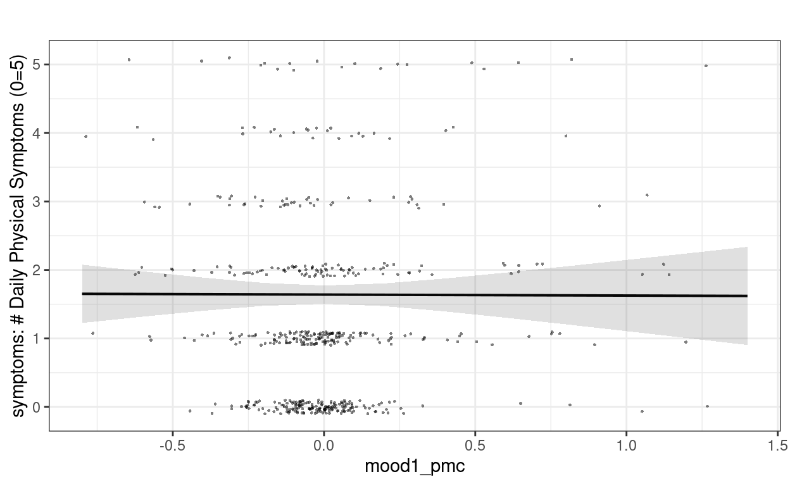
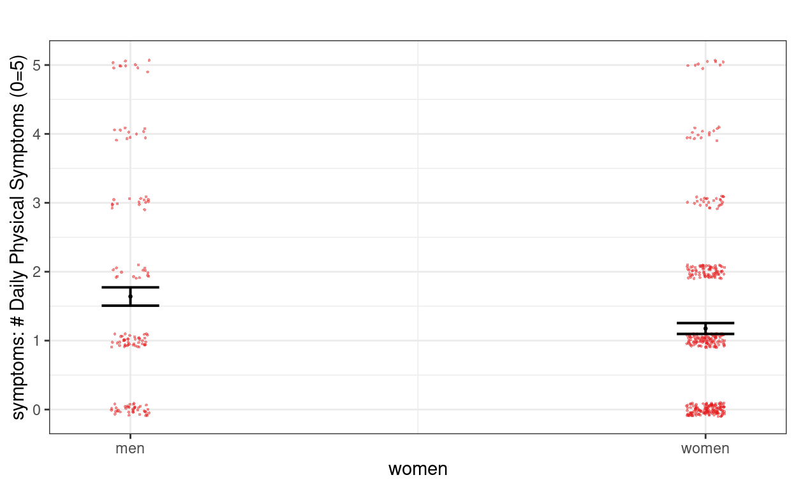
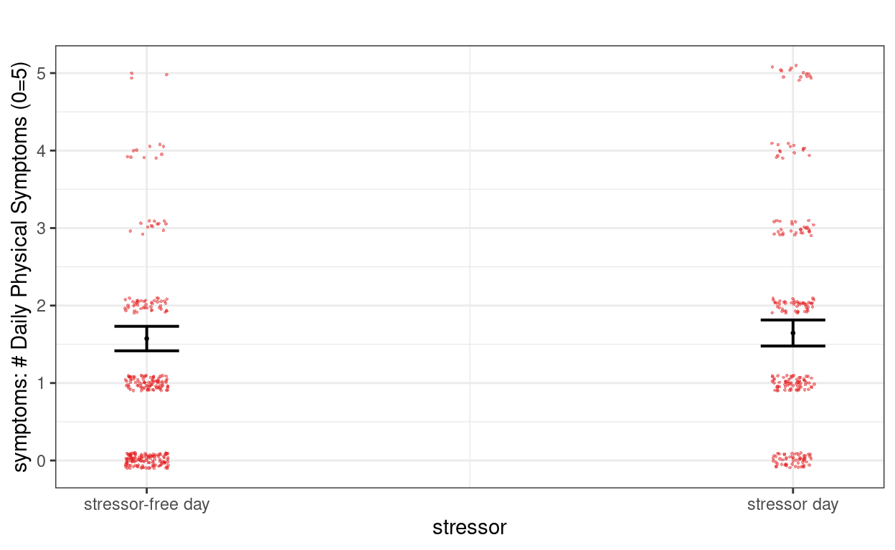

\[ \newcommand{\bv}[1]{\boldsymbol{\mathbf{#1}}} \]
Click here to download the Rmd file: week10-longitudinal-2.Rmd
# To install a package, run the following ONCE (and only once on your computer)
# install.packages("psych")
library(here) # makes reading data more consistent
library(tidyverse) # for data manipulation and plotting
library(haven) # for importing SPSS/SAS/Stata data
library(lme4) # for multilevel analysis
library(glmmTMB) # for longitudinal analysis
library(sjPlot) # for plotting
library(modelsummary) # for making tables
library(interactions) # for interaction plots
theme_set(theme_bw()) # Theme; just my personal preference
# Read in the data from gitHub (need Internet access)
curran_wide <- read_sav("https://github.com/MultiLevelAnalysis/Datasets-third-edition-Multilevel-book/raw/master/chapter%205/Curran/CurranData.sav")
# Make id a factor
curran_wide # print the data
># # A tibble: 405 15
># id anti1 anti2 anti3 anti4 read1 read2 read3 read4 kidgen
># <dbl> <dbl> <dbl> <dbl> <dbl> <dbl> <dbl> <dbl> <dbl> <dbl+lbl>
># 1 22 1 2 NA NA 2.1 3.9 NA NA 0 [girl]
># 2 34 3 6 4 5 2.1 2.9 4.5 4.5 1 [boy]
># 3 58 0 2 0 1 2.3 4.5 4.2 4.6 0 [girl]
># 4 122 0 3 1 1 3.7 8 NA NA 1 [boy]
># 5 125 1 1 2 1 2.3 3.8 4.3 6.2 0 [girl]
># 6 133 3 4 3 5 1.8 2.6 4.1 4 1 [boy]
># 7 163 5 4 5 5 3.5 4.8 5.8 7.5 1 [boy]
># 8 190 0 NA NA 0 2.9 6.1 NA NA 0 [girl]
># 9 227 0 0 2 1 1.8 3.8 4 NA 0 [girl]
># 10 248 1 2 2 0 3.5 5.7 7 6.9 0 [girl]
># # with 395 more rows, and 5 more variables: momage <dbl>,
># # kidage <dbl>, homecog <dbl>, homeemo <dbl>, nmis <dbl># Using the new `tidyr::pivot_longer()` function
curran_long <- curran_wide %>%
pivot_longer(
c(anti1:anti4, read1:read4), # variables that are repeated measures
# Convert 8 columns to 3: 2 columns each for anti/read (.value), and
# one column for time
names_to = c(".value", "time"),
# Extract the names "anti"/"read" from the names of the variables for the
# value columns, and then the number to the "time" column
names_pattern = "(anti|read)([1-4])",
# Convert the "time" column to integers
names_transform = list(time = as.integer)
) %>%
mutate(time0 = time - 1)
Observed covariance matrix across time
># read1 read2 read3 read4
># read1 0.86 0.67 0.57 0.48
># read2 0.67 1.17 0.96 0.96
># read3 0.57 0.96 1.35 1.08
># read4 0.48 0.96 1.08 1.56Implied covariance based on OLS (independence)
m0_ols <- lm(read ~ factor(time), data = curran_long)
diag(sigma(m0_ols), nrow = 4) %>%
round(digits = 2)
># [,1] [,2] [,3] [,4]
># [1,] 1.09 0.00 0.00 0.00
># [2,] 0.00 1.09 0.00 0.00
># [3,] 0.00 0.00 1.09 0.00
># [4,] 0.00 0.00 0.00 1.09Implied covariance based on random intercept MLM (compound symmetry)
m0_ri <- glmmTMB(read ~ factor(time) + (1 | id),
data = curran_long,
REML = TRUE
)
vc_m0_ri <- VarCorr(m0_ri)
(matrix(vc_m0_ri[[1]]$id[1, 1], nrow = 4, ncol = 4) +
diag(attr(vc_m0_ri[[1]], "sc")^2, nrow = 4)) %>%
print(digits = 2)
># [,1] [,2] [,3] [,4]
># [1,] 1.20 0.79 0.79 0.79
># [2,] 0.79 1.20 0.79 0.79
># [3,] 0.79 0.79 1.20 0.79
># [4,] 0.79 0.79 0.79 1.20Implied covariance based on random slope MLM (linear growth)
# Fit the piecewise growth model
m_pw <- glmmTMB(read ~ phase1 + phase2 + (phase1 + phase2 | id),
data = curran_long, REML = TRUE,
# The default optimizer did not converge; try optim
control = glmmTMBControl(
optimizer = optim,
optArgs = list(method = "BFGS")
)
)
vc_mpw <- VarCorr(m_pw)
# Covariance
(cbind(1, c(0, 1, 1, 1), c(0, 0, 1, 2)) %*%
vc_mpw[[1]]$id[1:3, 1:3] %*%
rbind(1, c(0, 1, 1, 1), c(0, 0, 1, 2)) +
diag(attr(vc_mpw[[1]], "sc")^2, nrow = 4)) %>%
print(digits = 2)
># [,1] [,2] [,3] [,4]
># [1,] 0.86 0.65 0.63 0.6
># [2,] 0.65 1.18 1.01 1.1
># [3,] 0.63 1.01 1.39 1.3
># [4,] 0.60 1.08 1.27 1.7From the piecewise model, add the AR(1) error structure
# Add the AR(1) structure
m_pw_ar1 <- glmmTMB(
read ~ phase1 + phase2 + (phase1 + phase2 | id) +
ar1(0 + factor(time) | id),
dispformula = ~0,
data = curran_long, REML = TRUE,
# The default optimizer did not converge; try optim
control = glmmTMBControl(
optimizer = optim,
optArgs = list(method = "BFGS")
)
)
vc_mpw_ar1 <- VarCorr(m_pw_ar1)
# Covariance
(cbind(1, c(0, 1, 1, 1), c(0, 0, 1, 2)) %*%
vc_mpw_ar1[[1]]$id[1:3, 1:3] %*%
rbind(1, c(0, 1, 1, 1), c(0, 0, 1, 2)) +
unname(vc_mpw_ar1[[1]]$id.1[1:4, 1:4])) %>%
print(digits = 2)
># [,1] [,2] [,3] [,4]
># [1,] 0.86 0.65 0.62 0.6
># [2,] 0.65 1.18 1.01 1.1
># [3,] 0.62 1.01 1.39 1.3
># [4,] 0.60 1.08 1.27 1.7\(H_0\): \(\rho = 0\)
anova(m_pw, m_pw_ar1) # Not statistically significant
># Data: curran_long
># Models:
># m_pw: read ~ phase1 + phase2 + (phase1 + phase2 | id), zi=~0, disp=~1
># m_pw_ar1: read ~ phase1 + phase2 + (phase1 + phase2 | id) + ar1(0 + factor(time) | , zi=~0, disp=~0
># m_pw_ar1: id), zi=~0, disp=~1
># Df AIC BIC logLik deviance Chisq Chi Df Pr(>Chisq)
># m_pw 10 3229.7 3281.6 -1604.9 3209.7
># m_pw_ar1 11 3231.6 3288.7 -1604.8 3209.6 0.0973 1 0.755The data is the first wave of the Cognition, Health, and Aging Project.
# Download the data from
# https://www.pilesofvariance.com/Chapter8/SPSS/SPSS_Chapter8.zip, and put it
# into the "data_files" folder
zip_data <- here("data_files", "SPSS_Chapter8.zip")
# download.file("https://www.pilesofvariance.com/Chapter8/SPSS/SPSS_Chapter8.zip",
# zip_data)
stress_data <- read_sav(
unz(zip_data,
"SPSS_Chapter8/SPSS_Chapter8.sav"))
stress_data
># # A tibble: 525 10
># PersonID women baseage session studyday dayofweek weekend symptoms
># <dbl> <dbl> <dbl> <dbl> <dbl> <dbl> <dbl> <dbl>
># 1 102 1 83.4 2 1 6 1 0
># 2 102 1 83.4 3 5 3 0 0
># 3 102 1 83.4 4 7 5 0 0
># 4 102 1 83.4 5 8 6 1 0
># 5 102 1 83.4 6 9 7 1 0
># 6 103 1 92 2 1 6 1 0
># 7 103 1 92 3 2 7 1 1
># 8 103 1 92 4 3 1 0 0
># 9 103 1 92 5 4 2 0 0
># 10 103 1 92 6 8 6 1 0
># # with 515 more rows, and 2 more variables: mood <dbl>,
># # stressor <dbl>The data is already in long format.
# First, separate the time-varying variables into within-person and
# between-person levels
stress_data <- stress_data %>%
# Center mood (originally 1-5) at 1 for interpretation (so it becomes 0-4)
# Also women to factor
mutate(mood1 = mood - 1,
women = factor(women, levels = c(0, 1),
labels = c("men", "women"))) %>%
group_by(PersonID) %>%
# The `across()` function can be used to operate the same procedure on
# multiple variables
mutate(across(c(symptoms, mood1, stressor),
# The `.` means the variable to be operated on
list("pm" = ~ mean(., na.rm = TRUE),
"pmc" = ~ . - mean(., na.rm = TRUE)))) %>%
ungroup()
stress_data
># # A tibble: 525 17
># PersonID women baseage session studyday dayofweek weekend symptoms
># <dbl> <fct> <dbl> <dbl> <dbl> <dbl> <dbl> <dbl>
># 1 102 women 83.4 2 1 6 1 0
># 2 102 women 83.4 3 5 3 0 0
># 3 102 women 83.4 4 7 5 0 0
># 4 102 women 83.4 5 8 6 1 0
># 5 102 women 83.4 6 9 7 1 0
># 6 103 women 92 2 1 6 1 0
># 7 103 women 92 3 2 7 1 1
># 8 103 women 92 4 3 1 0 0
># 9 103 women 92 5 4 2 0 0
># 10 103 women 92 6 8 6 1 0
># # with 515 more rows, and 9 more variables: mood <dbl>,
># # stressor <dbl>, mood1 <dbl>, symptoms_pm <dbl>,
># # symptoms_pmc <dbl>, mood1_pm <dbl>, mood1_pmc <dbl>,
># # stressor_pm <dbl>, stressor_pmc <dbl># Use `datasummary_skim` for a quick summary
datasummary_skim(stress_data %>%
select(-PersonID, -session, -studyday, -dayofweek,
-weekend, -mood,
# PMC for binary variable is not very meaningful
-stressor_pmc))
| Unique (#) | Missing (%) | Mean | SD | Min | Median | Max | ||
|---|---|---|---|---|---|---|---|---|
| baseage | 103 | 0 | 80.1 | 6.1 | 69.7 | 80.0 | 95.3 | |
| symptoms | 7 | 1 | 1.3 | 1.3 | 0.0 | 1.0 | 5.0 | |
| stressor | 3 | 1 | 0.4 | 0.5 | 0.0 | 0.0 | 1.0 | |
| mood1 | 13 | 1 | 0.2 | 0.4 | 0.0 | 0.0 | 2.6 | |
| symptoms_pm | 24 | 0 | 1.3 | 1.2 | 0.0 | 1.0 | 5.0 | |
| symptoms_pmc | 44 | 1 | 0.0 | 0.7 | 2.4 | 0.0 | 3.0 | |
| mood1_pm | 33 | 0 | 0.2 | 0.3 | 0.0 | 0.1 | 1.5 | |
| mood1_pmc | 98 | 1 | 0.0 | 0.3 | 0.7 | 0.0 | 1.3 | |
| stressor_pm | 8 | 0 | 0.4 | 0.3 | 0.0 | 0.4 | 1.0 |
stress_data %>%
select(symptoms_pm, symptoms_pmc,
mood1_pm, mood1_pmc, stressor_pm, stressor) %>%
psych::pairs.panels(jiggle = TRUE, factor = 0.5, ellipses = FALSE,
cex.cor = 1, cex = 0.5)

# Plotting mood
p1 <- ggplot(stress_data, aes(x = studyday, y = mood1)) +
# add lines to connect the data for each person
geom_line(aes(color = factor(PersonID), group = PersonID)) +
# add a mean trajectory
stat_summary(fun = "mean", col = "red", size = 1, geom = "line") +
# suppress legend
guides(color = "none")
# Plotting symptoms
p2 <- ggplot(stress_data, aes(x = studyday, y = symptoms)) +
# add lines to connect the data for each person
geom_line(aes(color = factor(PersonID), group = PersonID)) +
# add a mean trajectory
stat_summary(fun = "mean", col = "red", size = 1, geom = "line") +
# suppress legend
guides(color = "none")
gridExtra::grid.arrange(p1, p2, ncol = 2)
We can see that there is not a clear trend across time, but instead fluctuations.
We can also plot the trajectories for a random sample of individuals:
stress_data %>%
# randomly sample 40 individuals
filter(PersonID %in% sample(unique(PersonID), 40)) %>%
ggplot(aes(x = studyday, y = symptoms)) +
geom_point(size = 0.5) +
geom_line() + # add lines to connect the data for each person
facet_wrap(~ PersonID, ncol = 10)

The outcome is symptoms, and the time-varying predictors are mood1 and stressor. Lets look at the ICC for each of them.
m0_symp <- glmmTMB(symptoms ~ (1 | PersonID), data = stress_data,
REML = TRUE)
# If changing outcome, use the `update` function to avoid recompiling
m0_mood <- glmmTMB(mood1 ~ (1 | PersonID), data = stress_data,
REML = TRUE)
# Use family = bernoulli for a binary outcome; to be discussed in a later week
m0_stre <- glmmTMB(stressor ~ (1 | PersonID), data = stress_data,
family = binomial, REML = TRUE)
# Symptoms
(vc_m0sy <- VarCorr(m0_symp)) # shows the random effect SDs
>#
># Conditional model:
># Groups Name Std.Dev.
># PersonID (Intercept) 1.11052
># Residual 0.78313icc_symp <- vc_m0sy[[1]]$PersonID[1, 1] /
(vc_m0sy[[1]]$PersonID[1, 1] + attr(vc_m0sy[[1]], "sc")^2)
# Mood
(vc_m0mo <- VarCorr(m0_mood)) # shows the random effect SDs
>#
># Conditional model:
># Groups Name Std.Dev.
># PersonID (Intercept) 0.22881
># Residual 0.30849icc_mood <- vc_m0mo[[1]]$PersonID[1, 1] /
(vc_m0mo[[1]]$PersonID[1, 1] + attr(vc_m0mo[[1]], "sc")^2)
# Stressor (sigma is fixed to pi^2 / 3)
(vc_m0st <- VarCorr(m0_stre)) # shows the random effect SDs
>#
># Conditional model:
># Groups Name Std.Dev.
># PersonID (Intercept) 1.5428# The error variance is pi^2 / 3 for a binary outcome
icc_stre <- vc_m0st[[1]]$PersonID[1, 1] /
(vc_m0st[[1]]$PersonID[1, 1] + pi^2 / 3)
# Print ICCs
c(symptoms = icc_symp,
mood1 = icc_mood,
stressor = icc_stre)
># symptoms mood1 stressor
># 0.6678696 0.3549095 0.4197914One thing to consider with longitudinal data in a short time is whether there may be trends in the data due to contextual factors (e.g., weekend effect; shared life events in certain time). If this is the case, a common practice is to de-trend the data; otherwise associations between predictors and the outcome may be merely due to contextual factor happening on certain days.
Here there is no strong reason to think the data contain trends, as shown in the graphs. We can further test the linear trend:
m0_trend <- glmmTMB(symptoms ~ studyday + (studyday | PersonID),
data = stress_data,
REML = TRUE
)
summary(m0_trend)
># Family: gaussian ( identity )
># Formula: symptoms ~ studyday + (studyday | PersonID)
># Data: stress_data
>#
># AIC BIC logLik deviance df.resid
># 1487.4 1512.9 -737.7 1475.4 515
>#
># Random effects:
>#
># Conditional model:
># Groups Name Variance Std.Dev. Corr
># PersonID (Intercept) 1.238971 1.11309
># studyday 0.002477 0.04977 -0.12
># Residual 0.575147 0.75838
># Number of obs: 519, groups: PersonID, 105
>#
># Dispersion estimate for gaussian family (sigma^2): 0.575
>#
># Conditional model:
># Estimate Std. Error z value Pr(>|z|)
># (Intercept) 1.330849 0.125689 10.588 <2e-16 ***
># studyday -0.005746 0.010817 -0.531 0.595
># ---
># Signif. codes: 0 '***' 0.001 '**' 0.01 '*' 0.05 '.' 0.1 ' ' 1which was not significant. It there was a trend, we should include the time variable when studying the time-varying covariates.
# AR(1)
m0_ar1 <- glmmTMB(
symptoms ~ ar1(factor(studyday) + 0 | PersonID),
data = stress_data,
REML = TRUE
)
anova(m0_symp, m0_ar1) # not significant
># Data: stress_data
># Models:
># m0_symp: symptoms ~ (1 | PersonID), zi=~0, disp=~1
># m0_ar1: symptoms ~ ar1(factor(studyday) + 0 | PersonID), zi=~0, disp=~1
># Df AIC BIC logLik deviance Chisq Chi Df Pr(>Chisq)
># m0_symp 3 1477.7 1490.4 -735.83 1471.7
># m0_ar1 4 1476.0 1493.0 -734.02 1468.0 3.6248 1 0.05693 .
># ---
># Signif. codes: 0 '***' 0.001 '**' 0.01 '*' 0.05 '.' 0.1 ' ' 1Aka level-1 predictors; also put in the cross-level interaction with women
Level 1: \[\text{symptoms}_{ti} = \beta_{0i} + \beta_{1i} \text{mood1_pmc}_{ti} + e_{ti}\] Level 2: \[ \begin{aligned} \beta_{0i} & = \gamma_{00} + \gamma_{01} \text{mood1_pm}_{i} + \gamma_{02} \text{women}_i + \gamma_{03} \text{mood1_pm}_{i} \times \text{women}_i + u_{0i} \\ \beta_{1i} & = \gamma_{10} + \gamma_{11} \text{women}_i + u_{1i} \end{aligned} \]
m1 <- glmmTMB(
symptoms ~ (mood1_pm + mood1_pmc) * women + (mood1_pmc | PersonID),
data = stress_data,
REML = TRUE,
# The default optimizer did not converge; try optim
control = glmmTMBControl(
optimizer = optim,
optArgs = list(method = "BFGS")
)
)
summary(m1)
># Family: gaussian ( identity )
># Formula:
># symptoms ~ (mood1_pm + mood1_pmc) * women + (mood1_pmc | PersonID)
># Data: stress_data
>#
># AIC BIC logLik deviance df.resid
># 1443.0 1485.5 -711.5 1423.0 510
>#
># Random effects:
>#
># Conditional model:
># Groups Name Variance Std.Dev. Corr
># PersonID (Intercept) 0.85039 0.9222
># mood1_pmc 0.05156 0.2271 0.99
># Residual 0.61362 0.7833
># Number of obs: 514, groups: PersonID, 105
>#
># Dispersion estimate for gaussian family (sigma^2): 0.614
>#
># Conditional model:
># Estimate Std. Error z value Pr(>|z|)
># (Intercept) 0.86403 0.24618 3.510 0.000449 ***
># mood1_pm 3.86285 0.81368 4.747 2.06e-06 ***
># mood1_pmc 0.00396 0.26835 0.015 0.988225
># womenwomen -0.04167 0.28314 -0.147 0.883002
># mood1_pm:womenwomen -2.14123 0.90529 -2.365 0.018018 *
># mood1_pmc:womenwomen 0.16552 0.30859 0.536 0.591699
># ---
># Signif. codes: 0 '***' 0.001 '**' 0.01 '*' 0.05 '.' 0.1 ' ' 1plot_model(m1,
type = "pred", show.data = TRUE,
title = "", dot.size = 0.5,
jitter = 0.1
)
># $mood1_pm
>#
># $mood1_pmc
>#
># $women
interact_plot(m1,
pred = "mood1_pm",
modx = "women",
plot.points = TRUE,
point.size = 0.5,
point.alpha = 0.2,
x.label = "Negative Mood (Between-Person)",
y.label = "Physical Symptoms",
jitter = 0.1)
interact_plot(m1,
pred = "mood1_pmc",
modx = "women",
plot.points = TRUE,
point.size = 0.5,
point.alpha = 0.2,
x.label = "Daily Negative Mood (Within-Person)",
y.label = "Daily Physical Symptoms",
jitter = 0.1)
broom.mixed::augment(m1) %>%
mutate(mood1 = mood1_pm + mood1_pmc) %>%
ggplot(aes(x = mood1, y = symptoms, color = factor(PersonID))) +
# Add points
geom_point(size = 0.5, alpha = 0.2) +
# Add within-cluster lines
geom_smooth(aes(y = .fitted),
method = "lm", se = FALSE, size = 0.5
) +
# Add group means
stat_summary(
aes(x = mood1_pm, y = .fitted, fill = factor(PersonID)),
color = "red", # add border
fun = mean,
geom = "point",
shape = 24,
# use triangles
size = 2.5
) +
# Add between coefficient
geom_smooth(aes(x = mood1_pm, y = .fitted),
method = "lm", se = FALSE,
color = "black"
) +
facet_grid(~women) +
labs(y = "Daily Symptoms") +
# Suppress legend
guides(color = "none", fill = "none")
stressor# Convert stressor to a factor
stress_data$stressor <- factor(stress_data$stressor,
levels = c(0, 1),
labels = c("stressor-free day", "stressor day"))
m2 <- glmmTMB(
symptoms ~ (mood1_pm + mood1_pmc) * women + stressor_pm + stressor +
(mood1_pmc + stressor | PersonID),
data = stress_data,
REML = TRUE,
# The default optimizer did not converge; try optim
control = glmmTMBControl(
optimizer = optim,
optArgs = list(method = "BFGS")
)
)
# Contextual effect of stressor
plot_model(m2,
type = "pred", terms = "stressor_pm",
show.data = TRUE, jitter = 0.1,
title = "", dot.size = 0.5
)
# Within-person effect
plot_model(m2,
type = "pred", terms = "stressor",
show.data = TRUE, jitter = 0.1,
title = "", dot.size = 0.5
)

GEE is an alternative estimation method for clustered data, as discussed in 12.2 of Snijders and Bosker. It is a popular method especially for longitudinal data in some areas of research, as it offers some robustness against misspecification in the random effect structure (e.g., autoregressive errors, missing random slopes, etc). It accounts for the covariance structure by using a working correlation matrix, such as the exchangeable (aka compound symmetry) structure. On the other hand, it only estimates fixed effects (or sometimes called marginal effects), so we cannot known whether some slopes are different across persons, but only the average slopes. GEE estimates the fixed effects by iteratively calculating the working correlation matrix and updating the fixed effect estimates with OLS. At the end, it computes the standard errors using the cluster-robust sandwich estimator.
GEE tends to require a relatively large sample size, and is usually less efficient than MLM for the same model (i.e., GEE gives larger standard errors, wider confidence intervals, and thus has less statistical power), which can be seen in the example below.
Below is a quick demonstration of GEE using the geepack package in R.
stress_data_lw <- stress_data %>%
drop_na(mood1_pm, mood1_pmc, women, stressor_pm, stressor) %>%
# Also need to convert to a data frame (instead of tibble)
as.data.frame()
library(geepack)
m2_gee <- geeglm(symptoms ~ (mood1_pm + mood1_pmc) * women +
stressor_pm + stressor,
data = stress_data_lw,
id = PersonID,
corstr = "exchangeable",
std.err = "san.se")
summary(m2_gee)
>#
># Call:
># geeglm(formula = symptoms ~ (mood1_pm + mood1_pmc) * women +
># stressor_pm + stressor, data = stress_data_lw, id = PersonID,
># corstr = "exchangeable", std.err = "san.se")
>#
># Coefficients:
># Estimate Std.err Wald Pr(>|W|)
># (Intercept) 0.54884 0.22897 5.745 0.016531 *
># mood1_pm 3.19491 0.91671 12.146 0.000492 ***
># mood1_pmc -0.12724 0.25705 0.245 0.620613
># womenwomen -0.07326 0.27306 0.072 0.788486
># stressor_pm 0.90373 0.32419 7.771 0.005309 **
># stressorstressor day 0.06741 0.09278 0.528 0.467476
># mood1_pm:womenwomen -1.89663 0.93949 4.076 0.043509 *
># mood1_pmc:womenwomen 0.28588 0.29847 0.917 0.338155
># ---
># Signif. codes: 0 '***' 0.001 '**' 0.01 '*' 0.05 '.' 0.1 ' ' 1
>#
># Correlation structure = exchangeable
># Estimated Scale Parameters:
>#
># Estimate Std.err
># (Intercept) 1.323 0.152
># Link = identity
>#
># Estimated Correlation Parameters:
># Estimate Std.err
># alpha 0.5207 0.04957
># Number of clusters: 105 Maximum cluster size: 5# Small sample correction (Mancl & DeRouen, 2001) for the robust standard errors
library(geesmv)
m2_vcov_md <- GEE.var.md(symptoms ~ (mood1_pm + mood1_pmc) * women +
stressor_pm + stressor,
data = stress_data_lw,
id = "PersonID", # need to be string
corstr = "exchangeable")
># (Intercept) mood1_pm mood1_pmc
># 0.56476 2.97820 -0.21094
># womenwomen stressor_pm stressorstressor day
># -0.08227 0.88983 0.07183
># mood1_pm:womenwomen mood1_pmc:womenwomen
># -1.68409 0.37119library(lmtest) # For testing using corrected standard error
coeftest(m2_gee, diag(m2_vcov_md$cov.beta))
>#
># z test of coefficients:
>#
># Estimate Std. Error z value Pr(>|z|)
># (Intercept) 0.5488 0.2636 2.08 0.0373 *
># mood1_pm 3.1949 1.3114 2.44 0.0148 *
># mood1_pmc -0.1272 0.3015 -0.42 0.6730
># womenwomen -0.0733 0.3104 -0.24 0.8134
># stressor_pm 0.9037 0.3428 2.64 0.0084 **
># stressorstressor day 0.0674 0.0941 0.72 0.4738
># mood1_pm:womenwomen -1.8966 1.3428 -1.41 0.1578
># mood1_pmc:womenwomen 0.2859 0.3417 0.84 0.4028
># ---
># Signif. codes: 0 '***' 0.001 '**' 0.01 '*' 0.05 '.' 0.1 ' ' 1# Ignore clustering
m2_lm <- lm(
symptoms ~ (mood1_pm + mood1_pmc) * women +
stressor_pm + stressor,
data = stress_data_lw
)
# Compare the fixed effects
msummary(
list(
OLS = m2_lm,
MLM = m2,
`GEE (Sandwich SE)` = m2_gee,
`GEE (Sandwich SE + small-sample correction)` = m2_gee
),
vcov = list(
OLS = NULL,
MLM = NULL,
`GEE (Sandwich SE)` = NULL,
`GEE (Sandwich SE + small-sample correction)` =
diag(m2_vcov_md$cov.beta)
)
)
| OLS | MLM | GEE (Sandwich SE) | GEE (Sandwich SE + small-sample correction) | |
|---|---|---|---|---|
| (Intercept) | 0.565 | 0.452 | 0.549 | 0.549 |
| (0.144) | (0.238) | (0.229) | (0.264) | |
| mood1_pm | 2.978 | 3.437 | 3.195 | 3.195 |
| (0.468) | (0.786) | (0.917) | (1.311) | |
| mood1_pmc | 0.211 | 0.064 | 0.127 | 0.127 |
| (0.399) | (0.292) | (0.257) | (0.301) | |
| womenwomen | 0.082 | 0.039 | 0.073 | 0.073 |
| (0.152) | (0.252) | (0.273) | (0.310) | |
| stressor_pm | 0.890 | 0.849 | 0.904 | 0.904 |
| (0.218) | (0.301) | (0.324) | (0.343) | |
| stressorstressor day | 0.072 | 0.064 | 0.067 | 0.067 |
| (0.142) | (0.101) | (0.093) | (0.094) | |
| mood1_pm womenwomen | 1.684 | 1.957 | 1.897 | 1.897 |
| (0.506) | (0.857) | (0.939) | (1.343) | |
| mood1_pmc womenwomen | 0.371 | 0.251 | 0.286 | 0.286 |
| (0.451) | (0.333) | (0.298) | (0.342) | |
| sd__(Intercept) | 0.732 | |||
| sd__mood1_pmc | 0.215 | |||
| sd__stressorstressor day | 0.268 | |||
| cor__(Intercept).mood1_pmc | 0.557 | |||
| cor__(Intercept).stressorstressor day | 0.967 | |||
| cor__mood1_pmc.stressorstressor day | 0.713 | |||
| sd__Observation | 0.780 | |||
| Num.Obs. | 513 | |||
| R2 | 0.253 | |||
| R2 Adj. | 0.243 | |||
| AIC | 1616.9 | 1436.7 | ||
| BIC | 1655.1 | 1500.3 | ||
| Log.Lik. | 799.450 | 703.364 | ||
| F | 24.474 | |||
| Std.Errors | OLS | MLM | GEE (Sandwich SE) | GEE (Sandwich SE + small-sample correction) |
| alpha | 0.521 | 0.521 | ||
| gamma | 1.323 | 1.323 | ||
| max.cluster.size | 5.000 | 5.000 | ||
| n.clusters | 105.000 | 105.000 |
As shown above, for OLS regression, which ignores the temporal dependence of the data, the standard errors for the between-level coefficients are too small. The results with MLM and with GEE are comparable, although GEE only gives the fixed effect estimates. Overall, GEE tends to have larger standard errors, especially when taking into account the samll-sample correction. In sum, the pros and cons of GEE are: